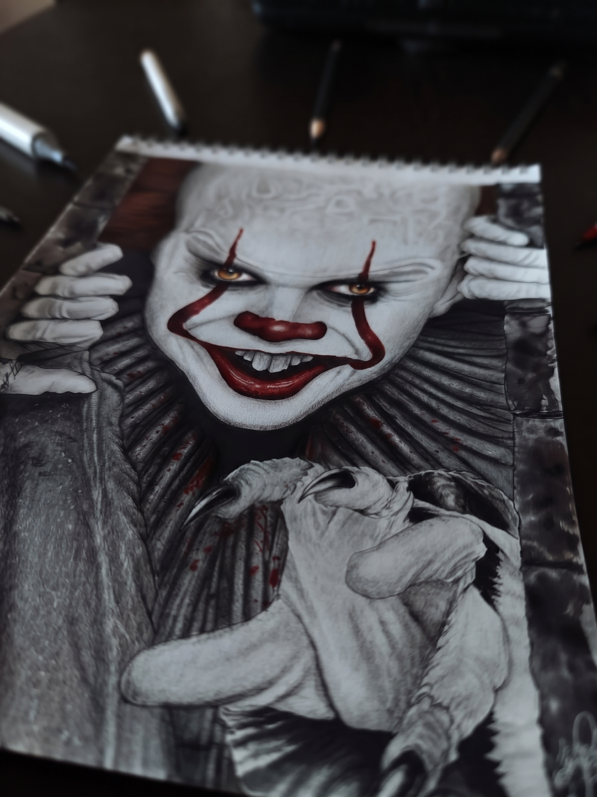
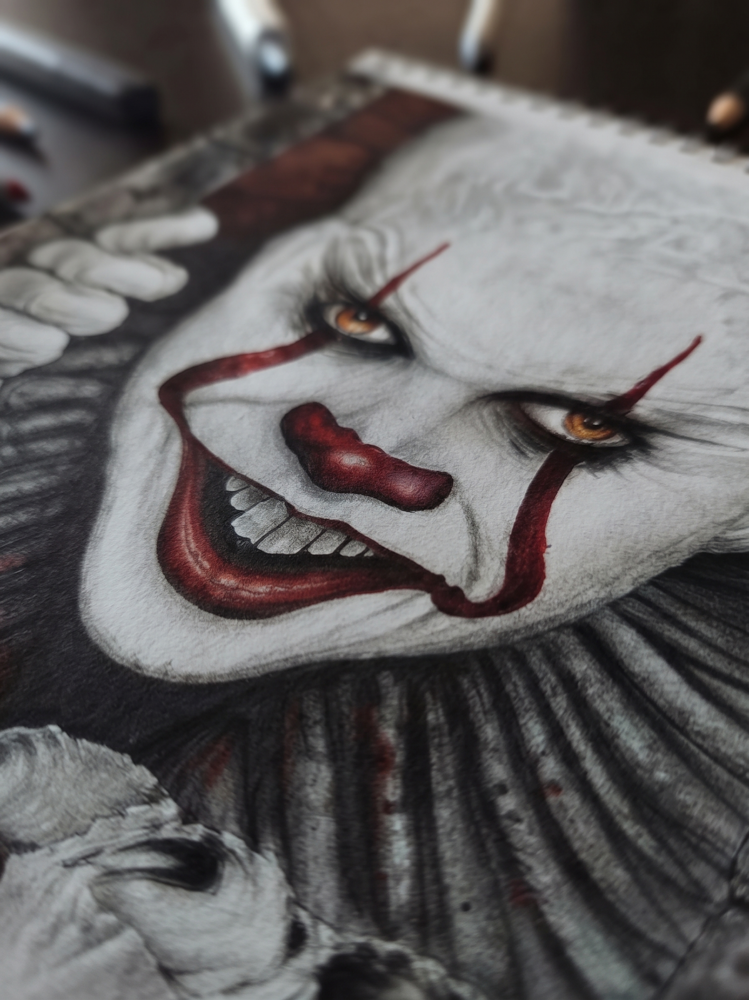
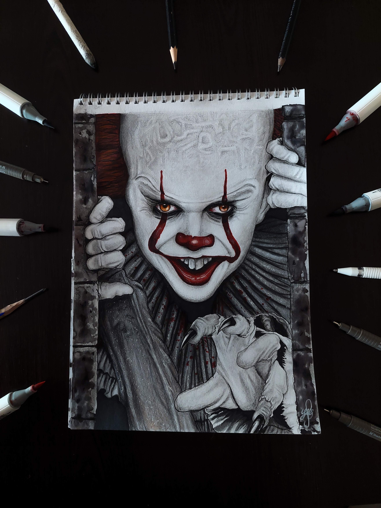

AFİŞ
Etkinlik Afişi — 5G Semineri
Poster tasarımı · 2025
> merhaba, ben Yağız_
Elektrik-Elektronik Mühendisliği öğrencisi ve dijital tasarımcı. Afişler, illüstrasyonlar ve konsept çalışmalarla teknolojiyi görünür kılıyorum.
01 / HAKKIMDA
Üniversitede Elektrik-Elektronik Mühendisliği birinci sınıf öğrencisiyim. Sistemlerin nasıl çalıştığını merak etmek beni mühendisliğe, onları anlaşılır ve etkileyici kılmak ise tasarıma yöneltti.
Etkinlik afişleri, sosyal medya görselleri, illüstrasyonlar ve konsept çalışmalar üretiyorum. IEEE ComSoc ekibinde, teknik içerikleri sade, tutarlı ve modern bir görsel kimlikle topluluğa ulaştırmak istiyorum.
TASARIM
Afiş, sosyal medya, illüstrasyon, görsel kimlik
ARAÇLAR
Figma, Photoshop, Illustrator (kendine göre düzenle)
MÜHENDİSLİK
Elektrik-Elektronik, iletişim sistemlerine ilgi
02 / PROJELERİM
Poster tasarımı · 2025

GRAFİKGörsel kimlik · 2025

KONSEPTİllüstrasyon · 2025

AFİŞPoster tasarımı · 2025
Bilgi tasarımı · 2025
Marka konsepti · 2025
03 / İLETİŞİM
Proje, iş birliği ya da sadece merhaba demek için bana ulaşabilirsin.